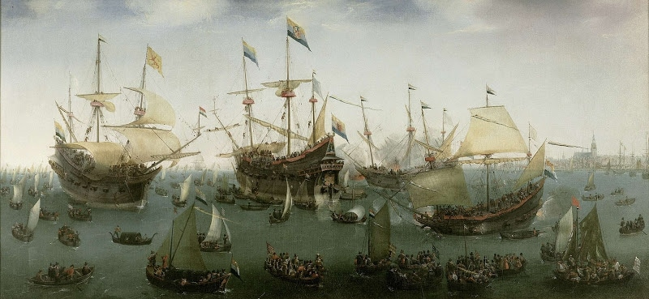

History of the Netherlands
From the earliest hunter-gatherers to a modern constitutional monarchy — a journey through one of Europe's richest histories.
The Netherlands: A Story Centuries in the Making
The Netherlands' origins travel much farther back than the 16th century. The earliest known human life to inhabit the area did so some 40,000 years ago. The first settlements appeared around 4800 B.C., and during the Iron Age (800–58 B.C.) the area began to prosper, attracting the interest of the Romans who took over in 57 B.C. and ruled for 450 years — building towns, founding settlements, and constructing military structures that would influence generations.
The Early Middle Ages (411–1000) saw the Frisian Kingdom established, the Dutch language emerge, and the first Christians settle the area. By the High Middle Ages (1000–1432) the Netherlands had become part of the Holy Roman Empire. The Burgundian period (1433–1567), begun when the Duke of Burgundy united much of what is now the Netherlands and Belgium, is where our story truly begins.
The Reign of Charles V
1506 – 1555
Charles V, at the tender age of six, inherited the Low Countries after the death of his father, Philip the Handsome. His aunt, Margaret of Austria, governed his kingdom until 1515 when he came of age. By 19, Charles V had become Emperor of not only the Spanish Empire, but the German Empire as well.
Charles was ambitious and determined to extend his empire. As a result, he was always at war with new countries and busy defending the ones he had already acquired. With the Low Countries bordering France, they became a central location for wartime efforts, creating persistent unrest in the region. In 1555, weary from decades of war, Charles abdicated — giving the Spanish Empire, including the Low Countries, to his son Philip II, and the Holy Roman Empire to his brother Ferdinand.
The Eighty Years War & the Dutch Republic
1566 – 1648
During Charles' reign and afterwards, laws made it acceptable to persecute and execute Protestants. Several nobles from the Low Countries paraded through Brussels to peacefully petition for better rights. Margaret of Parma suspended the laws while she sought counsel from Philip II — and during that suspension, years of pent-up tension finally exploded into revolt.
Philip II ordered the Duke of Alva to the Netherlands to restore order. Alva established the Council of Troubles — known as the Council of Blood for its many death sentences. One of the worst incidents was the execution of 500 Protestant rebels in Zutphen by drowning in the frozen River Ijssel. Towns were surrounded, starved into surrender, then massacred.
The first great victory came during the Siege of Leiden (1573–1574). Over a third of the city's population had perished, but William of Orange and his troops finally forced the Spaniards to retreat. Herring and white bread were brought into the starving city — an event still celebrated in the Netherlands today.
William of Orange was assassinated in 1584 after King Philip II declared him an outlaw. His son Maurice took over, leading the Dutch to a string of victories beginning with the Siege of Breda in 1590. A Twelve Year Truce was agreed in 1609, though internal religious conflict over predestination split the country and resulted in the execution of Grand Pensionary Johan van Oldenbarnevelt. When the truce ended in 1621, war resumed. Both sides were exhausted. The Treaty of Munster, signed on 30 January 1648, officially ended the war — and the Netherlands had its sovereignty at last.
The Dutch Republic's Golden Age
1600 – 1690
Even during the conflict with Spain, Amsterdam was experiencing extraordinary growth. By 1600 it had established itself as a trade and shipbuilding epicentre. Three new canals were constructed with each expansion — forming Amsterdam's famous ring of canals. During this period Amsterdam gathered all of its wealth through a massive trade market, with products from around the world brought in, packed, and shipped to new destinations.
It was during the Golden Age that scientists, mathematicians, and intellectuals from all over the world flocked to the Netherlands, drawn by its remarkable intellectual tolerance. René Descartes published his most important works in Amsterdam. Christiaan Huygens discovered Saturn's moon Titan, invented the pendulum clock, and explained Saturn's rings. Philosophers Locke, Hobbes, and Spinoza were all connected to the Netherlands during this era.
Three Anglo-Dutch Wars were waged between 1652 and 1674. The most dramatic saw Admiral Michiel de Ruyter destroy several docked English ships and seize England's flagship, the Royal Charles. Towards the end of the Golden Age, Stadholder William III successfully seized the English crown — ruling both nations until his death in a horse-riding accident. The Golden Age was officially over, and the Republic was practically bankrupt from the cost of war.
The Patriots Come to Power
1781 – 1795
On a night in September 1781, a small pamphlet was passed throughout Amsterdam calling citizens to take back their roles in government. Greater individual rights were demanded. This group would come to be known as the Patriots, and they would make a very big splash in the years to come.
The Patriots criticised Prince William V of Orange for the corruption and abuse that existed in government. In response, William V fled to Gelderland in 1785. When Princess Wilhelmina was refused passage to The Hague at gunpoint by Patriots, her brother King Frederick William II of Prussia sent his army to crush the rebellion. By the end of 1787, approximately 40,000 Patriots had fled to France.
Seven years later, the French Revolutionary army arrived on Dutch soil and forced William V to flee to England. The Patriots returned and swiftly gained power. The revolution they had dreamed of had finally arrived.
The Batavian Republic & French Takeover
1795 – 1813
On 18 January 1795, the Patriots took control of administration in Amsterdam. The next day, the revolutionary Batavian Republic was established under French supervision, bringing equal rights to all citizens and the formation of elected representatives for the first time.
The Batavian Republic lasted until 1806, when Emperor Napoleon Bonaparte appointed his brother Louis Bonaparte as the first King of the Netherlands. It was an ill-fated appointment lasting only four years. In 1810, Napoleon removed his brother from power and annexed the Netherlands directly to France — erasing the Republic entirely.
The Kingdom of the Netherlands
1813 – 1848
In 1813, a provisional government was created to reclaim the country from France. After 18 years of exile, William V returned and was coronated in Amsterdam as sovereign prince, soon naming himself King William I. He worked tirelessly to rebuild what the French had destroyed, reviving trade and industrial industries.
In 1815, Napoleon returned from exile on Elba, forcing all major European nations to act. Dutch forces played a role alongside the Duke of Wellington and the Prussians at the Battle of Waterloo, where Napoleon was defeated for the last time.
King William I's authoritarian rule eventually sparked the Belgian Revolution of 1831. After ten days of battles, 70,000 French soldiers arrived to support the Belgians and forced Dutch troops to retreat. The conflict ended with the Treaty of London in 1839. In 1840, William I abdicated in favour of King William II.
By 1848, with revolutionary fires sweeping Europe, King William II backed amendment of the constitution. Johan Rudolf Thorbecke drafted the constitution of 1848 — making the Netherlands an official constitutional monarchy. That constitution, though revised several times, remains the basis of Dutch governance to this day.
The Industrial Revolution
1850 – 1918
The mid-19th century saw the rise of industry in the Netherlands and a drastic decline in working conditions for the working class. Before reform arrived, there was another matter to address: slavery. The Netherlands had outlawed the slave trade by 1814, but slavery itself continued in its colonies. On 1 July 1863, slavery was finally abolished in the Dutch colony of Surinam — though plantation workers were required to continue working for another ten years under contract.
Child labour and twelve-hour workdays were the norm at the start of the industrial revolution. Samuel van Houten initiated legislation in 1874 making it illegal for children under twelve to work in factories. Further laws in 1889 and 1911 regulated working hours for women and children. Unions became central to Dutch society, with workers banding together to demand better conditions from employers.
Rail travel transformed the country in the mid-19th century. Steam replaced sail. By 1900, Amsterdam's population had reached 500,000 — 300,000 more than just fifty years earlier — triggering one of the fastest housing booms in Dutch history.
World War II
1940 – 1945
Beginning on 10 May 1940 and lasting only five days, the German Nazi army invaded the Netherlands by air and land. The attack began in The Hague and within hours Germany controlled the northern provinces. The Dutch drew a defensive line at Utrecht but ultimately surrendered on 14 May. Over 4,000 Dutch citizens lost their lives and 2,700 more were wounded.
What followed was the Holocaust. Dutch Jews were progressively segregated — barred from public places, dismissed from jobs, their children excluded from school. By 1942 they were forced to wear a yellow Star of David. Deportations to concentration camps began and did not stop until September 1944. Approximately 107,000 Dutch Jews were deported — and most perished. Over six million Jews were murdered across Europe in the Holocaust, one of the most terrible acts of genocide the world has ever seen.
As Germany's treatment of the Jews worsened, Dutch resistance groups organised — hiding Jewish families, assassinating German officers, destroying transportation infrastructure, and raiding German-operated factories. Their courage remains one of the most honoured chapters in Dutch national memory.
South Netherlands was liberated in the autumn of 1944. The rest of the Netherlands was officially liberated on 5 May 1945 — Liberation Day, still celebrated every year. On 15 August 1945, the Dutch East Indies were freed from Japanese occupation, bringing the war to a complete end.
Progress After the War
1945 – Present
The Netherlands' society changed drastically after the war. The economy was in shambles and the people were still recovering from massive losses — both human and structural. But the Dutch are resilient and quick to recover.
Reconstruction began with significant aid from the United States. Willem Drees extended the welfare state, ensuring government took responsibility for public health, financial benefits, and affordable education for all citizens. The post-war baby boom brought renewed hope and rapid population growth throughout the 1940s and 1950s.
The 1960s and 70s marked a period of great cultural change. The baby boomers became teenagers and young adults, embracing rock and roll, social experimentation and idealism. Religion began to fade from public life — a secularisation broadly continuing to this day.
The 1980s and 90s saw a mass influx of immigrants bring new cultures, cuisines, and languages. Communities from Turkey and Morocco became deeply ingrained in Dutch society. The 2000s brought political debate on integration that continues today. Through it all, the Netherlands has continued to prosper — evolving into one of the most accepting, egalitarian, and prosperous countries in the world, and showing no signs of slowing down.
Continue Exploring
Discover more about what makes the Netherlands the remarkable country it is today.